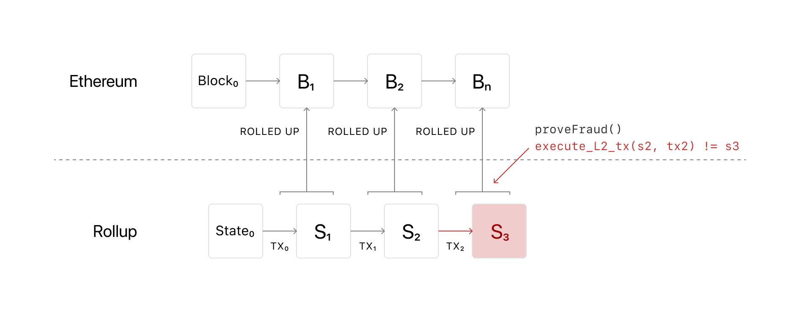
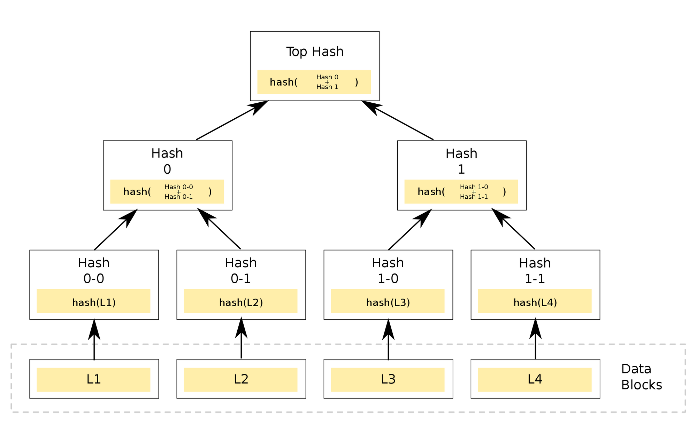

How can we trust a settlement of some value?
By verifying the transactions!
To achieve this we have historically invested a huge amount in “social capital”
… all of whom stand on the shoulders of giants
Until 1968 Wall Street was drowning in paper from a surge in trading, which caused the exchange to close often on Wednesdays to settle trades.
0.05 tx/sec
Later trades would be recorded and settling electronically solving most of the scaling problems
100,000-1,000,000 tx/sec… but settlement latency is often 3 days
10 tx/sec
| Chain | Nodes |
|---|---|
| Ethereum 2.0 | 238,099 |
| Cardano | 2,076 |
| Avalanche | 1,023 |
| Tezos | 377 |
| Polkadot | 297 |
| Cosmos Hub | 150 |
| Nano | 107 |
T✌️ o ways this evolves
… or more likely a linear combination of those two
Specialization reverses the blockchain trilemma
Consensus 🤝
Execution 🧠
Data availability 💾
100 tx/sec
10,000 tx/sec100 * 10,000 = 1,000,000 tx/sec
30% cost reduction
Rollups (L2)
Merkle tree
Zero-knowledge Rollups
Cross-rollup communication
Shared state, including liquidity
Security guarantees
zkEVM
zkEVM on L1
Running on mobile phones and in browsers
70% cost reduction
Now we just need an unforeseen 10x in throughput and then we’re up to 10 million transactions per second with a settlement latency of a few seconds for next to nothing 🤔